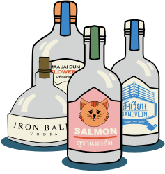

ถ้าพ.ร.บ.
แล้วมันดียังไง


ปลดการล็อค เงื่อนไขให้ผู้ผลิตทุกราย สามารถต้มเหล้าเองได้อย่างอิสระและ ปรับเงื่อนไขในกรณีที่ต้มเพื่อจัดจำหน่าย
ขยายเศรษฐกิจ ของกลุ่มอาชีพที่อยู่ในอุตสาหกรรม คนมีงานทำกันมากขึ้น นั่นหมายถึง ประเทศมีคนตกงานน้อยลง

เพิ่มมูลค่าพืชพรรณ ที่มีในท้องถิ่น โดยการแปรรูปผลิตภัณฑ์สร้างสินค้า โอทอปเป็นของฝากจากพื้นที่นั้น ๆ

ตลาดสุราไทยคึกคัก เกิดการแข่งขันกันพัฒนาผลิตภัณฑ์ใหม่ๆ ออกมาสร้างตัวเลือกให้ผู้บริโภค

ลดการผูกขาด รายได้กระจายสู่รายย่อย